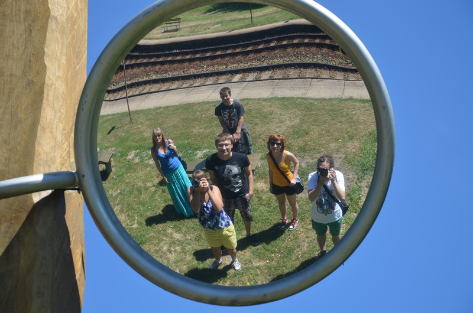
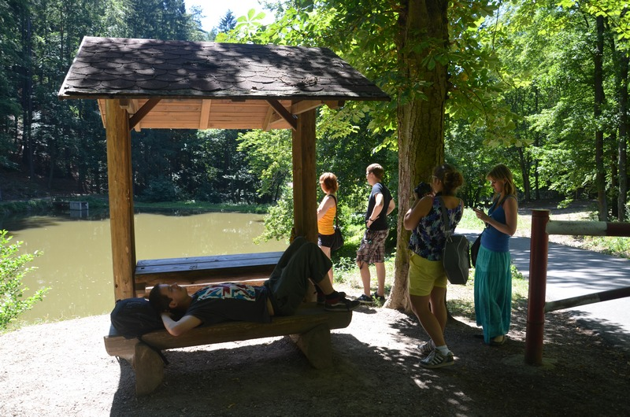
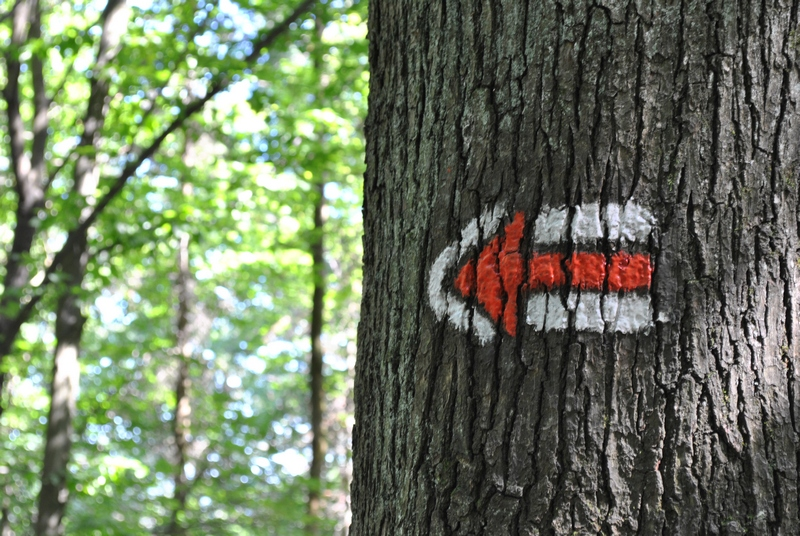
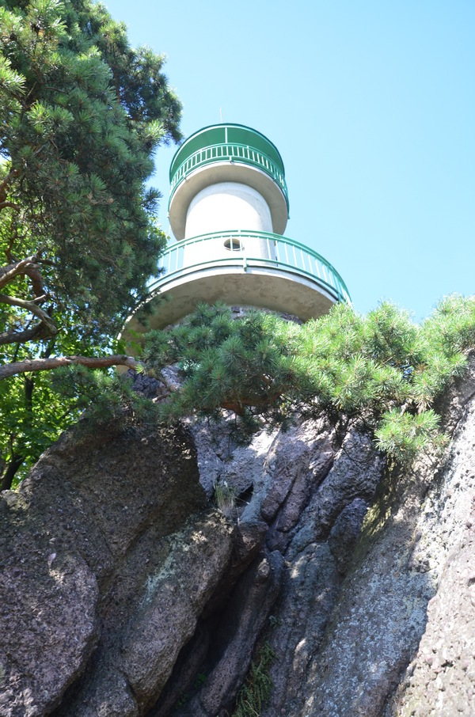
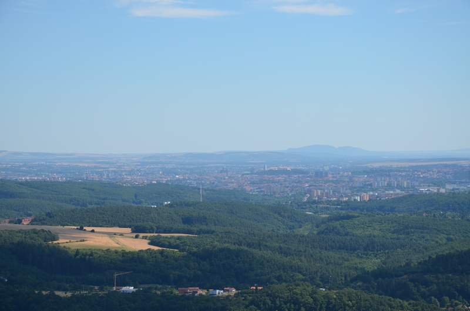
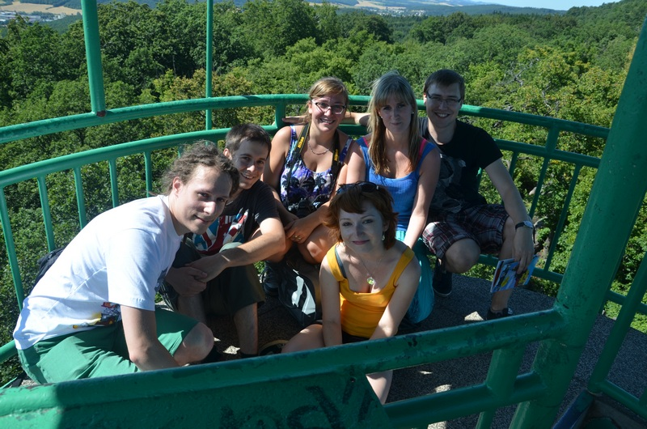
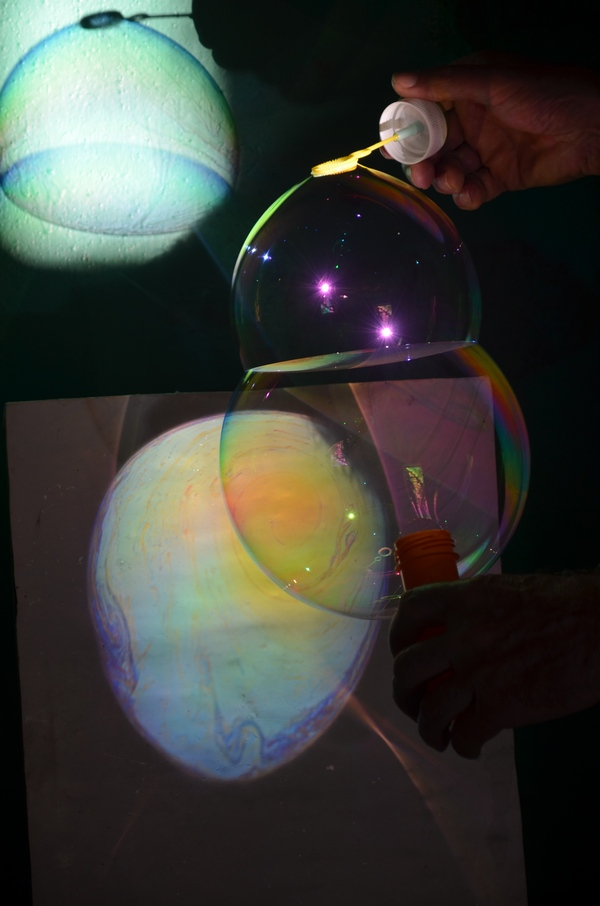
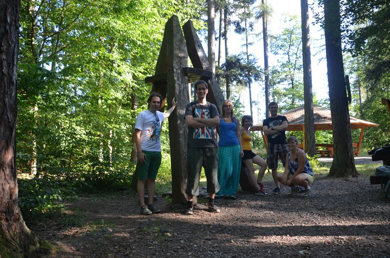
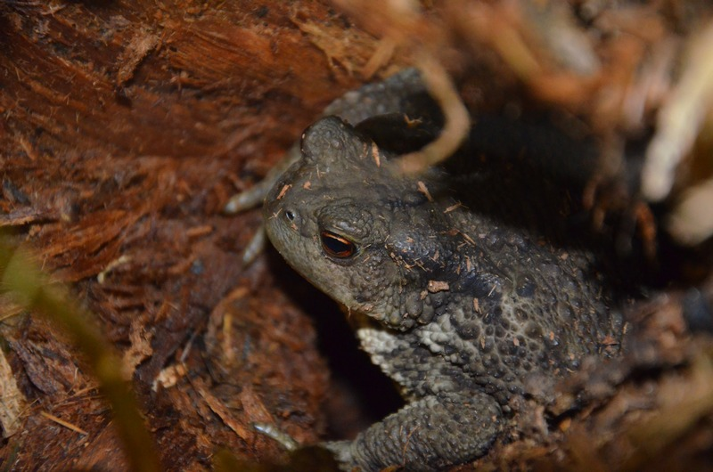

Protože se dneska ne a ne rozhoupat k nějaké smysluplné činnosti, rozhodla jsem se v krátkosti a prostřednictvím několika fotek zavzpomínat na hezký výlet, který jsme jednu červencovou neděli podnikli spolu s Nezdař, její kamarádkou Monikou, Frantou a Lukášem. (Povšimněte si, jak se nám podařilo vytvořit genderově vyvážený tým :D!)

Členové výpravy
Babí lom je údajně jedním z nejkrásnějších turistických cílů v okolí Brna. Z železniční stanice Česká, kam se během pár minut pohodlně dopravíte vlakem, se vydáte do obce Lelekovice. Zde můžete, stejně jako my, udělat první nezbytnou zastávku v hospůdce na růžku a doplnit tekutiny :D…

Pauzička
Z Lelekovic pak můžete pokračovat po červené turistické značce vzhůru do lesů - až k rozhledně Babí Lom. Na této trase mě zaujaly místní růžově zabarvené kameny - jeden jsem si odnesla domů na památku.

Po červené
Pokud vám nedělají dobře výšky, výšlap na rozhlednu si dobře rozmyslete. Tak nebezpečně nízké zábradlí, jaké mají tady, jsem snad ještě na žádné rozhledně neviděla. Na druhou stranu, za chvíli si na to zvyknete a ten nádherný výhled prostě stojí zato…

Rozhledna

Výhled na Brno

Závrať :D
Pokud budete mít štěstí jako my, potkáte v rozhledně “bublinového dědu”. Je to týpek, který si míchá svoji vlastní bublifukovou směs a vyrábí pak ultra pevné a trvanlivé bubliny. Jedna prý uletěla 2km a pak teprve praskla :O. Děda umí s bublinama všelijaké další fígle, tvoří z nich různé útvary nebo vám třeba zahraje “bublinové divadlo” :-). Kluci z něj vymámili recept na tu super bublifukovou směs, která sestává z cca 6ti přesných ingrediencí přesného poměru a teploty. Tož kdybyste někdo měli zájem :-)…

Bublinové divadlo
Po bublinovém intermezzu naše cesta pokračovala po hřebenu z červených devonských slepenců (proto to narůžovělé kamení všude) až k dalšímu cíli naší cesty - lelkovadlu. Jedná se o dřevěný útvar, který tu nechal zřídit svazek obcí Ponávka. Kdo se pod lelkovadlem projde, zbaví se všech lelků a přestane prokrastinovat. Je doporučeno tento rituál opakovat alespoň jednou do roka. Leč mám takový dojem, že na nás to nemělo úplně stoprocentní účinek :D…

Lelkovadlo
Po cestě jsme samozřejmě ulovili spoustu kešek, z nichž nejkurioznější byla ta poslední, která se nacházela v lesíčku kousek od lelkovadla. V podezřelém pařezu jsme objevili jednu opravdu rozkošnou ropuchu (domnívali jsme se, že je to princ, který hlídá kešku… nikdo se ji ovšem neodvážil políbit :D).

Žába na prameni
Po asfaltové cestě jsme se pak vrátili zpátky do Lelekovic, odkud jsme náš výšlap zahájili. Po opětovném doplnění tekutin v našem oblíbeném podniku se kruh uzavřel a vyrazili jsme zpátky na železniční stanici do České. Tam jsme zjistili, že domnělý čas odjezdu našeho vlaku je vskutku jen domnělý - někdo ho prostě naslepo plácnul a tato myšlenka se ve skupince uchytila jako fakt. Takto vidíte, jak vznikají drby :D! Volnou hodinu do odjezdu dalšího spoje jsme proto strávili v příjemné hospůdce v České a těšili se, jak si zajdeme po příjezdu do Brna na super večeři. To už je ale zase trochu jiná story :D…